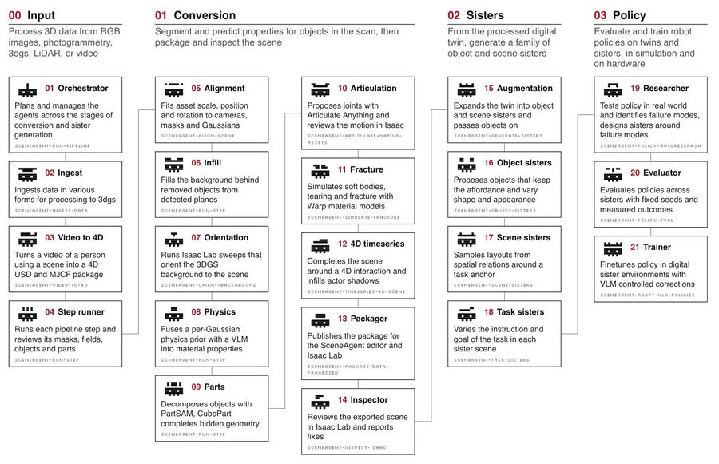
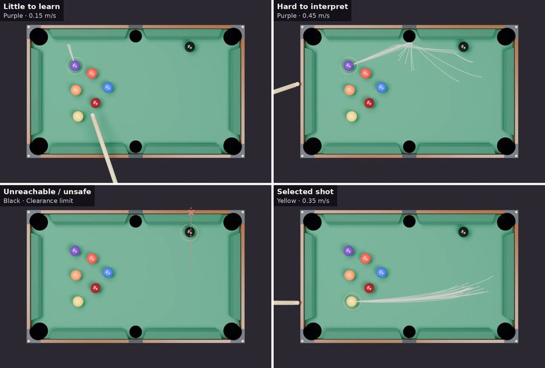
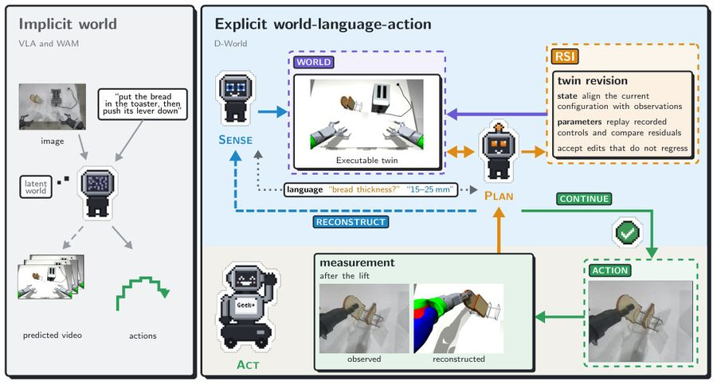
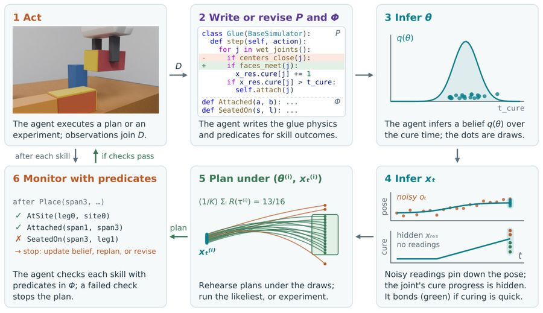
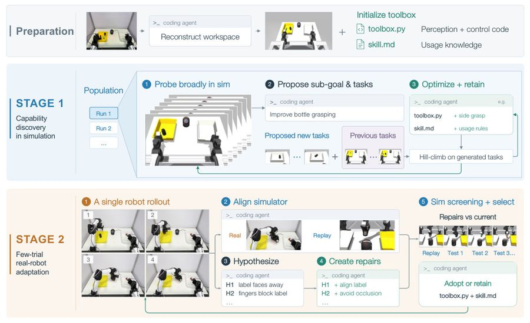

Agent-centric-real-to-sim · 归档于 2026-11-20
Agentic Real2Sim 全景
2026 年下半年的 agentic real-to-sim：第二轮 18 篇新论文
Real2Sim 全景：更早的 22 篇和四十年历史先读哪篇
归档到 Agent-centric real-to-sim：第二轮 18 篇的入口。分组和 chips 是我的判断，数字都能追到原文。
TL;DR
- What
- agent 不只建场景，也建 asset、动手量物理、在 twin 里练、给 agent 打分：5 类 18 篇。
- Gap
- 10/16 个系统改 twin 时只看同一份输入或仿真自检；6 篇没写物理参数从哪来。
- Evidence
- harness 比模型重要：SceneAgent 的 skills 让 6 个 harness 的 F1@1cm 从 2.36–9.51% 到 40.45–60.75%。看着最像 ≠ 最能用：Video2World 里形状最准的 GPT-6 Astra 成功率 10.7%，Fable 5.1 是 25.5%。
Level 1 · Map
18 篇分 5 类：agent 在 real-to-sim 的哪一段干活
flowchart TD IN["真实输入
图 · 视频 · 扫描 · 交互"] --> G1["1 · 建场景
7 篇"] IN --> G2["2 · 建 asset
3 篇"] IN --> G3["3 · 量物理、修 twin
4 篇"] G1 --> TW["Twin
可仿真的场景和 asset"] G2 --> TW G3 --> TW TW --> G4["4 · 在 twin 里练
2 篇 → 真机"] TW --> G5["5 · 给 agent 打分
2 个 benchmark"] click G1 href "#stage-1" click G2 href "#stage-2" click G3 href "#stage-3" click G4 href "#stage-4" click G5 href "#stage-5"
点方块跳到该类的卡片。
Level 2 · Loop
agent 在环里做什么：写、跑、看、改
flowchart TD IN["真实输入
图 · 视频 · 扫描 · episode"] --> AG["Agent
LLM · VLM · coding agent"] AG --> W["写出来
场景代码 · asset 程序 · 参数"] W --> SIM["跑
simulator + renderer"] SIM --> EV["看：修改的证据
卡片上的“改”"] EV -->|"对不上就改"| AG SIM --> TW["Twin
训练 · 评测 · 规划"] TW --> V["怎么证明它对
卡片上的“证明”"]:::gap
第 4 列四种证据：渲染↔输入 和建 twin 用的同一份输入比；仿真检查 在仿真里跑稳定、碰撞、回放或探针；动手探测 专门做新的真实交互去量；真机反馈 用真机执行时测到的量或成败。颜色：灰 = 同一份输入或先验，蓝 = 仿真或 GT，绿 = 新的真实数据，红 = 没有或没写。
Level 3 · Papers
每篇一张卡：作者原图、一句话、三个标签
1 · 7 篇建场景图、视频或扫描 → 能仿真的场景
2 · 3 篇建 asset一个物体 → 带关节、材料、碰撞的 asset
3 · 4 篇量物理、修 twin动手交互或真机测量 → 改参数和模型



EMPIRIC2026-09-28
agent 只给引擎补缺的机制代码并推参数 belief，仿真 25/25 全解（baseline 最多 16）
真机：1 次 run，滑动 9.9 vs 预测 10.1 cm

4 · 2 篇在 twin 里练，再上真机twin → 程序或 policy → 真机
5 · 2 篇给 agent 打分视频 → agent 建的世界 → 隐藏标注打分
Compare
18 篇横向对比
| 论文 | 输入 | agent 写出什么 | 修改的证据 | 物理参数从哪来 | 怎么证明 twin 对 | 真机 |
|---|---|---|---|---|---|---|
| 建场景图、视频或扫描 → 能仿真的场景 | ||||||
| SceneAgent2026-10 | 扫描视频 | 串联重建工具；4D 写不读视频的 build script | 渲染↔输入仿真检查 | VLM 估计查表 | 对 GT 几何真机成功率 | 1 任务 44/50 |
| NeoWorld-32026-10 | 多视角 RGB-D | Python 场景程序（NeoMCP 工具）；NeoSDK 拟合数值 | 渲染↔输入仿真检查 | 默认值 | 对 GT 几何 | 双臂 3 次，无成功率 |
| LiteReality-Agent2026-10 | 扫描 | Room.py + object.py（Blender Python）；专用量测工具调用 | 渲染↔输入仿真检查 | VLM 估计查表 | 渲染对输入 | 无 |
| GRASE2026-10 | 视频 | Blender MCP 工具调用；数值拟合交给工具 | 渲染↔输入 | 未写 | 对 GT 几何 | 无 |
| Unravel2026-10 | 单图 | 不写代码：移除列表、框、编辑是否通过 | 渲染↔输入 | 未写 | VLM 裁判 | 无 |
| SceneEvolve2026-10 | 单图 | Blender Python 场景程序；teacher 改 harness | 渲染↔输入 | 未写 | 渲染对输入 | 无 |
| ARSTAG2026-09 | 单图指令 | scene graph、SAM3 提示、expert 程序、随机化配置 | 仿真检查 | 未写 | 真机成功率 | 7 任务各 40 次，π0.5 74.6% |
| 建 asset一个物体 → 带关节、材料、碰撞的 asset | ||||||
| USDCraft2026-10 | 扫描 mesh单图 | Python 资产程序 model.py → 铰接 USD | 渲染↔输入仿真检查 | VLM 估计 | 对 GT 几何真机成功率 | 3 任务各 20 次，85–90% |
| FACT (Articulated Twins)2026-09 | 单图被动响应视频 | 几何程序 P(ϕ)、碰撞代理局部编辑、响应模型 | 渲染↔输入仿真检查动手探测 | 辨识 | 对 GT 几何留出数据误差 | 无（只录被动响应视频） |
| DiagGen2026-09 | 单图 | 部件材料参数、probe 动作、返工路由 | 仿真检查 | VLM 估计 | VLM 裁判 | 无 |
| 量物理、修 twin动手交互或真机测量 → 改参数和模型 | ||||||
| CUE2026-11 | 动手交互 | 代码：MuJoCo 球台、tracker、CMA-ES 拟合；决定下一杆 | 动手探测 | 辨识 | 留出数据误差 | 真球台 10 杆留出（项目页） |
| D-World2026-10 | 机器人相机执行中的测量 | 可执行 twin 代码；具名字段修订 + 证据 | 真机反馈仿真检查 | VLM 估计辨识 | 回放对原录像 | 2 任务，只有过程，无成功率 |
| EMPIRIC2026-09 | 动手交互 | simulator 的 Python 子类：补缺的力、约束、隐状态 | 动手探测仿真检查 | 辨识 | 留出数据误差 | 1 次 run，滑动 9.9 vs 预测 10.1 cm |
| SimEX2026-09 | 单图真机 trial | toolbox.py + skill.md；改 sim、写 4 个候选 repair | 仿真检查真机反馈 | 未写 | 真机成功率 | 3 任务 26/30 |
| 在 twin 里练，再上真机twin → 程序或 policy → 真机 | ||||||
| CoEnv / CoEx2026-04 | 多视角 RGB-D | 完整的多臂程序（Claude Code），跑完自判 VERIFIED | 仿真检查 | 查表 | 真机成功率 | 5 任务各 10 次，70% vs 50% |
| F4R2026-09 | 真机失败视频扫描 | JSON 失败记录：最早失败帧、原因、随机化标签 | 仿真检查真机反馈 | 未写 | sim↔真机相关真机成功率 | 4 任务，OOD 90.0% |
| 给 agent 打分视频 → agent 建的世界 → 隐藏标注打分 | ||||||
| Video2World2026-10 | 视频 | 被测 agent 交冻结的场景 + 控制包，benchmark 自己跑 | — | — | 对 GT 几何留出数据误差 | 无（9 个 agent，222 题） |
| PhysCodeGym2026-10 | 视频 | 被测 agent 写 Blender 程序，用仿真反馈改 | — | — | 对 GT 几何仿真内测试 | 无（156 题） |
归类是我读完页面后的判断，不是论文的说法。两个 benchmark 只列评分方式，不计入下面的 Finding 1。
| 月 | 论文 | 相机/尺度 | 几何 | 质量/摩擦 | 接触 | 可变形 | 铰接 | 渲染 | 任务/角色 | 验证 | 真机 |
|---|---|---|---|---|---|---|---|---|---|---|---|
| 10 月 | SceneAgent | ● | ● | ○ | ○ | ● | ○ | ○ | ○ | ● | ● |
| 10 月 | NeoWorld-3 | ○ | ● | ○ | ○ | ● | ○ | ● | ● | ||
| 10 月 | LiteReality-Agent | ○ | ● | ○ | ● | ○ | ● | ● | |||
| 10 月 | GRASE | ○ | ● | ○ | ○ | ● | |||||
| 10 月 | Unravel | ○ | ● | ○ | ○ | ○ | |||||
| 10 月 | SceneEvolve | ○ | ● | ○ | ● | ● | |||||
| 09 月 | ARSTAG | ○ | ● | ○ | ○ | ○ | ● | ○ | ● | ||
| 10 月 | USDCraft | ○ | ● | ○ | ○ | ○ | ● | ○ | ○ | ● | ● |
| 09 月 | FACT (Articulated Twins) | ○ | ● | ● | ● | ● | ○ | ● | |||
| 09 月 | DiagGen | ○ | ○ | ○ | ○ | ● | ○ | ○ | ● | ○ | |
| 11 月 | CUE | ○ | ○ | ● | ● | ● | ○ | ||||
| 10 月 | D-World | ○ | ● | ○ | ○ | ○ | ○ | ○ | ○ | ● | ● |
| 09 月 | EMPIRIC | ○ | ○ | ● | ○ | ○ | ● | ● | |||
| 09 月 | SimEX | ○ | ○ | ○ | ○ | ○ | ○ | ○ | ○ | ● | |
| 04 月 | CoEnv / CoEx | ○ | ○ | ○ | ○ | ○ | ● | ○ | ● | ||
| 09 月 | F4R | ○ | ○ | ○ | ○ | ○ | ● | ● | ● | ● | |
| 10 月 | Video2World | ○ | ● | ○ | ○ | ○ | ○ | ● | ● | ||
| 10 月 | PhysCodeGym | ○ | ○ | ○ | ● | ○ | ○ | ○ | ○ | ● | |
| ● 的篇数 | 1 | 11 | 3 | 4 | 2 | 3 | 3 | 4 | 14 | 9 |
覆盖面：● 主要贡献且有数字 ○ 碰到了，但没量或只用先验 空 = 不涉及。鼠标停在符号上看理由。● 最多的是几何 11 篇、验证 14 篇；接触 4 篇、质量/摩擦 3 篇、任务/角色 4 篇。
Findings
把 18 篇放在一起看到的四件事
1改 twin：10/16 只看同一份输入或仿真自检
| 归到 | 篇数 | 论文 |
|---|---|---|
| 改 twin 的依据 | ||
| 新的真实交互 | 6 | FACT (Articulated Twins)、CUE、D-World、EMPIRIC、SimEX、F4R |
| 仿真自检 | 7 | SceneAgent、NeoWorld-3、LiteReality-Agent、ARSTAG、USDCraft、DiagGen、CoEnv / CoEx |
| 只看同一份输入 | 3 | GRASE、Unravel、SceneEvolve |
| 物理参数从哪来 | ||
| 从交互辨识 | 4 | FACT (Articulated Twins)、CUE、D-World、EMPIRIC |
| 先验或手调 | 6 | SceneAgent、NeoWorld-3、LiteReality-Agent、USDCraft、DiagGen、CoEnv / CoEx |
| 没写 | 6 | GRASE、Unravel、SceneEvolve、ARSTAG、SimEX、F4R |
| 怎么证明 twin 对 | ||
| 新的真实数据 | 9 | SceneAgent、ARSTAG、USDCraft、FACT (Articulated Twins)、CUE、EMPIRIC、SimEX、CoEnv / CoEx、F4R |
| 对 GT 几何 | 2 | NeoWorld-3、GRASE |
| 同一份数据或自评 | 5 | LiteReality-Agent、Unravel、SceneEvolve、DiagGen、D-World |
| 只有定性 | 0 | — |
- 改的依据：用了新的真实交互的 6 篇是 FACT (Articulated Twins)、CUE、D-World、EMPIRIC、SimEX、F4R。
- 物理：从交互辨识的 4 篇只辨识几个参数（摩擦、回弹、质量、尺寸），场景都很小。
- 证明对：直接在留出的真实数据上量 twin 误差的只有 3 篇（FACT (Articulated Twins)、CUE、EMPIRIC）；其余用新真实数据的，量的是下游任务成功率。
2同一个模型，harness 一换，结果差很多
五篇在固定模型或固定 agent 的前提下只改 harness 或工具，比较前后。
| 论文 | 固定的 | 改的 | 结果 | 代价 |
|---|---|---|---|---|
| SceneAgent | 6 个 harness 的模型 | 加 SceneAgent skills | bin F1@1cm 2.36–9.51% → 40.45–60.75%（Fig. 5） | Codex token 10.0M → 271.2M（Fig. 6） |
| NeoWorld-3 | coordinator–worker agents | BlenderMCP → NeoSDK / NeoMCP | RoboCasa365 部件穿插 45.41% → 0.67%（Table 4、5） | — |
| SceneEvolve | Qwen3.8-27B 参数 | teacher 演化 harness | DINOv2-S 0.198 → 0.392（Table 2）；平均 SSIM 比 GPT-5.6-Sol 高 32.3% | 比 Sol 慢 116.4%，成本低 59.8%（§4.2.2） |
| PhysCodeGym | DeepSeek-V4.1-Flash（high） | Codex vs Claude Code | S_tot 0.479 vs 0.450（Fig. 5） | — |
| USDCraft | 单 agent 流程 | 加一个独立 observation agent | 部件 F1 84.830 → 82.556，反而变差（Table 7） | 多一个 agent |
- harness 的差距（SceneAgent 有无 skills）比模型之间的差距大（我的概括）。
- 但多加 agent 不一定好（USDCraft）；skills 也让 token 涨了 27 倍。
3benchmark：看着对 ≠ 用着对
两个新 benchmark 都把“像不像”和“能不能用”分开打分，结论相同。
| benchmark | 规模 | 看着最对的 | 用起来 | 差在哪 |
|---|---|---|---|---|
| Video2World | 222 题、9 个 agent | GPT-6 Astra：Shape CD 0.69 cm 最准、人评最高 | 成功率 10.7%，Fable 5.1 是 25.5%（Table 2） | 举罐子一题：几何最准的 Fable 没举起；Astra 举起但穿模被拒（Fig. A10） |
| PhysCodeGym | 156 题、9 个配置 | 物体清单分高于事件分（Sol 0.835 vs 0.687） | 运动分最高只有 0.324（Tab. 2） | 原条件满分的木件，释放点一挪就穿进盘子 158 帧（Fig. 22） |
- 最好的系统：Video2World 成功率 25.5%（人工辅助参照 58.8%），PhysCodeGym 总分 0.663。
- 和 Finding 2 同一个道理：几何和渲染分数说明不了能不能用；要么跑任务，要么做 counterfactual。
4上真机的 7 篇，没有一篇测过质量和摩擦
| 论文 | 真机任务 | 次数 | 结果 | 对照 | 物理怎么来 |
|---|---|---|---|---|---|
| SimEX | 3 | 各 10 | 26/30 | ENPIRE* 3/30 | 没写；每次真机 trial 后 agent 定性改 sim |
| USDCraft | 3 | 各 20 | 90/85/85% | toaster lever：Articraft–Sol 10% | LLM 按指南写，未测 |
| SceneAgent | 1 | 50 | 44/50 | 40 条示范时 24/50 | MLP + VLM 先验，查表 |
| F4R | 4 | ID、OOD 各 20 | 93.75% / 90.0% | Targeted BC 91.25% / 71.25% | asset estimate，没说怎么估 |
| ARSTAG | 7 | 各 40 | π0.5 74.6% | 无外部 baseline；DP 66.8%、ACT 43.6% | 没写；nut 由 agent 直接设 0.02 kg |
| NeoWorld-3 | 2 | 双臂 3 次 | 3 次都由现场观察者判成功 | 无 | 配置值：每个 body 1 kg、摩擦 0.5 |
| CoEnv / CoEx | 5 | 各 10 | 70% | 去掉 code agent 50% | 按物体类别指定，取值未报告 |
- 能跑通靠的是闭环 policy、随机化或在 twin 里反复试，不是物理参数准（我的推断，和 Real2Sim 全景的 Finding 3 一致）。
Limits
这一页的局限
- 18 篇几乎都是 2026-09 以后的 arXiv 预印本（CoEnv 的 v1 在 4 月），没有同行评审。
- 分组、chips 和 Finding 1 的归档是我的判断；原始数字都在各论文页面里。
- 约 30 篇只读了摘要的相关论文没放进来，列在 Real2Sim 全景的未精读表。
For Agent-centric real-to-sim
对 r2s-lite 有什么用
- repair 加一道 replay 闸门。D-World：修改只有在最近一段记录上 replay 不变差才收；GRASE：改善且别的视角不退步才收。
- 先做 skills 和专用工具，再换模型。SceneAgent 的 skills、NeoWorld-3 的 NeoSDK / NeoMCP、SceneEvolve 演化的 harness，都比换模型的差距大。
- 物理只能动手量。CUE、EMPIRIC、FACT (Articulated Twins)、D-World 都要机器人或人主动交互；只有录像的 r2s-lite，在有真机前诚实标“假设”。
Reading list
先读哪篇
| 想知道 | 先读 |
|---|---|
| agent 怎么建整个场景 | SceneAgent · NeoWorld-3 · LiteReality-Agent |
| 可靠的 asset：关节、可变形 | USDCraft · FACT (Articulated Twins) · DiagGen |
| 物理参数怎么量 | CUE · D-World · EMPIRIC · SimEX |
| twin 怎么用来训练、上真机 | CoEnv / CoEx · F4R · ARSTAG |
| 怎么评 agent 建的世界 | Video2World · PhysCodeGym |
| harness 怎么设计 | SceneEvolve · SceneAgent · LiteReality-Agent |